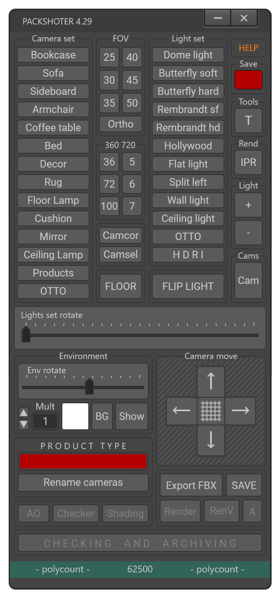

ИЗМЕНЕНИЯ В СТРУКТУРЕ НАЗВАНИЙ!
(что изменилось)
Базовое название (Название архива, название сцены, название превью, и экспортов):
Тип изделия отделяем от названия изделия и убираем описание (цвет)
Было: 84848484-NFINITE-PENDANT_LAMP_EGLO-BLACK (три тире)
Стало: 84848484-NFINITE-PENDANT_LAMP-EGLO (три тире)
Название базового хелпера
должно соответствовать базовому названию (названию сцены)
Было: 84848484-NFINITE-PENDANT_LAMP_EGLO (два тире)
Стало: 84848484-NFINITE-PENDANT_LAMP-EGLO (три тире)
Названия геометрии
К базовому названию добавляем тип материала (-wood_a)
Было: 84848484-NFINITE-PENDANT_LAMP_EGLO-wood_a (три тире)
Стало: 84848484-NFINITE-PENDANT_LAMP-EGLO-wood_a (четыре тире)
Названия материалов
Убираем "Mat-" и к базовому названию добавляем тип материала (-wood_a)
Было: Mat-84848484-NFINITE-PENDANT_LAMP_EGLO-wood_a (четыре тире)
Стало: 84848484-NFINITE-PENDANT_LAMP-EGLO-wood_a (четыре тире)
Названия текстур
К базовому названию добавляем тип материала с названием карты (-wood_a_D)
Было: 84848484-NFINITE-PENDANT_LAMP_EGLO-wood_a_D.png (три тире)
Стало: 84848484-NFINITE-PENDANT_LAMP-EGLO-wood_a_D.png (четыре тире)
- В установщик добавлена новая версия MTL 2.8
- В установщик добавлен скрипт переименования сцен со старыми названиями "Nom_renam"
Для использования Packshoter 4.20 со старыми сценами
сначала нужно запустить "Nom_renam"
и только после успешного переименования запустить Packshoter 4.20
MTL 2.8 и Nom_renam доступны из меню Packshoter (или выводим кнопки на тулбар)
- Добавлен сет света "Flat light" для клиента "LOWES"
1 - Изменена template сцена, актуальный template - PACKSHOOTER-TEMPLATE-V6.45
Все предыдущие версии Packshoter неприемлемы!
На Платформе будет производиться проверка и неактуальные версии архивов
будут возвращаться на переделку!
2 - Добавлена возможность автоматического ресайза текстур до разрешения 4096x4096,
YES - Вы собираетесь ресайзить текстуру самостоятельно
при помощи "улучшайзеров"
NO - Packshoter просто отресайзит текстуры до размера 4096x4096

3 - Добавлена возможность тестового экспорта GLB,
перед созданием финального архива можно сделать экспорт GLB (необязательно)
4 - Добавлено меню Packshoter, из которого можно вызвать сам Packshoter,
Material texture loader и Test export GLB,
пункт подменю "Test export GLB" является экспериментальным,
позволяет проверить сцену и сделать экспорт GLB на любом этапе,
финальный архив сделать нельзя
5 - Добавлено преобразование текстур к указанным по ТЗ параметрам (RGB/8 и Gray/8),
преобразованные текстуры будут только в финальном архиве,
в исходной папке текстуры остаются без изменений
если текстуры сделаны по ТЗ - Packshoter не будет тратить время
на их преобразование и архивация будет выполнена быстрее.
6 - Добавлено преобразование текстур NormalMap из DirectX в OpenGL,
преобразованные текстуры будут только в экспорте GLB,
в исходной папке текстуры остаются без изменений
7 - Вернул возможность двигать TOP камеру вперед-назад
8 - Добавлены дополнительные проверки в "Checking and Archiving"
Packshoter создан для сборки сцен, экспорта готовой модели и упаковки финального архива.
Packshoter должен запускаться в сцене с готовой моделью, выполненной в соответствии
с актуальным техзаданием! (Наименования, геометрия,развертка, материалы, текстуры)
Удалять или добавлять объекты при открытом Packshoter - нельзя!
Кроме того, Packshoter "не заточен" (пока) для сборки аксессуаризаций.
Собирать аксессуаризации можно, но проверки будут неполноценными и возможны ошибки.
Если при запуске появляется окно WRONG SCENE NAME
необходимо проверить сцену и структуру папок.
Сцена должна полностью соответствовать базовому ТЗ!
При запуске скрипт проверяет правильность названия
базовой папки, сцены и соответствие названия объектов
названию сцены.
CREATE SCENE - создание новой сцены.
FIX SCENE - открывает ранее созданную сцену
для внесения в нее правок.
Если открываемая сцена не соответствует ТЗ
кнопка FIX SCENE будет неактивной
ACCESSORYZATION - добавление в сцену
на готовый объект готовых аксессессуаров из ZIP архивов упакованных по ТЗ.
Не подходит для ручной аксессуаризации, при которой модели аксессуаров
не упакованы по ТЗ, а перетаскиваются вручную из готовых сцен.
При запуске скрипт проверяет правильность названия сцены
и соответствие названия объектов названию сцены.
- Если названия соответствуют ТЗ - верхний CHECK будет зеленым
- Если названия строчными (маленькими) буквами (для случаев,
когда на объекте используются Vray материалы) верхний check
будет оранжевым
- Если скрипт выдает ошибки при запуске - проверяем сцену и названия.
Выбранный сет камер (Camera Set) должен соответствовать
типу объекта в сцене. Если ни один из сетов не соответствует
типу объекта выбираем тот, который позволит показать объект
с самого выгодного ракурса

Сцена должна быть освещена одним из наборов источников света.
По-умолчанию использутся “Dome Light” для напольных изделий,
“Wall Light” для настенных изделий и “Ceiling Light” для потолочных
(светильники, люстры и т.п.)
Все остальные наборы используются после согласования
с менеджером проекта.
HDRI сет состоит из 6 пунктов, по-умолчанию используется HDRI_1.
Ползунок врещения HDRI выставлен по-умолчанию.
(подменю раскрывается после нажатия кнопки "HDRI")
Вращение всего выбранного сета освещения вокруг изделия позволяет более точно
настроить
угол падения света от всей группы источников. (Аналогично в подменю HDRI)

Отзеркаливание выбранного сета освещения слева направо и наоборот

На всех превью со всех камер не должно быть пересветов.
Интенсивность источников света (ИС) сета “Dome Light” изменять нельзя!
При использовании сета “Dome Light”, для достижения приемлемого результата
можно (придется) изменять яркость текстур.
Во всех остальных случаях для достижения приемлемого результата
можно изменять multiplier ИС.
После установки финального значения multiplier необходимо сохранять сцену через Packshoter.
Размер и координаты ИС изменять нельзя.

Camcor - применяет ко всем камерам модификатор "Camera correction"
Camsel - Выделяет все камеры в сцене для дальнейших манипуляций

Cams - Последовательное переключение всех камер в сцене
Объект должен быть отцентрован во вьюпорте при помощи кнопок F L R B.
По-умолчанию нельзя менять FOV и углы вращения камер,
если в этом есть необходимость -
согласовываем с менеджером проекта.
Кнопки F L R B работают только если выделена камера (камеры).


Объект должен быть отцентрован во вьюпорте при помощи сетки.
Объект должен быть по центру, одного масштаба на всех видах
и не выходить за пределы
границ сетки, за исключением крупно-
габаритных объектов (Диван, Шкаф, Ковер и.т.п)


Для настройки бликов и отражений используем ползунок "Rotate"
Ползунок Rotate позволяет вращать HDRI в сцене.
Значение "Mult" меняет яркость HDRI
Кнопка "Show" для наглядности отображает HDRI во вьюпорте.
Color selector - позволяет менять цвет бэкграунда на рендерах.
Цвет меняется только по требованию проект-менеджера,
по-умолчанию должен быть белый.

Render - Рендер превью. Создает и сохраняет изображение
в папку "preview" (создает папку "preview", если она отсутствует)
Кнопка Render становится активной только после сохранения сцены
(кнопка SAVE)
A - Рендеринг преью с альфа-каналом

IPR - промежуточный рендеринг для настройки освещения
и для настройки материалов (В этом режиме не работает Camera Correction)
Необходимо переименовывать все камеры в сцене
в соответствии с типом изделия
Для этого в красное поле PRODUCT TYPE копируем тип изделия
из названия архива и нажимаем кнопку “Rename Cameras”

Например:
162985469-WALMART-COFFEE_TABLE_BIG_JOE-BLACK
UMA9891-HAYNEEDLE-WALL_MIRROR_DECMODE-BRONZE
854001-GENERIC-BOOKCASE_BIBGEN_NADINE-BLACK_NATURAL
Недопустимо использование "-", например COFFEE-TABLE

Промежуточный экспорт FBX для запекания AO
Не является финальным экспортом
Финальный экспорт осуществляется автоматически
После проверки сцены перед архивацией.
(Продолжение следует...)